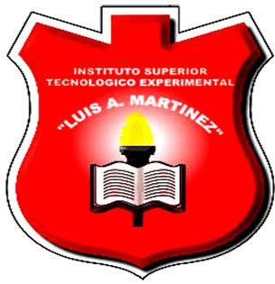

Sobre Mí
Soy un estudiante y desarrollador de software de Ecuador, nacido en Ambato el 3 de noviembre de 2004. Me
considero una persona amable, creativa, ambiciosa y un buen amigo. Entre mis pasatiempos están jugar
fútbol, videojuegos y salir con amigos. Mi motivación proviene de las experiencias que me enseñaron que
siempre es posible levantarse y mejorar.
Inicié mis estudios en la Unidad Educativa Luis A. Martínez, donde completé mi educación básica y media.
Esta etapa fue fundamental para fortalecer mis valores y descubrir mi interés por la tecnología.
Actualmente, continúo mi formación en Ingeniería en Software, una carrera que me ha permitido
profundizar en el desarrollo tecnológico y orientarme hacia el campo profesional.
Desde joven, siempre me ha apasionado la tecnología y la forma en que puede mejorar nuestras vidas. Esta
fascinación me llevó a estudiar Ingeniería en Software, donde he descubierto mi verdadera vocación. Mi
objetivo no solo es convertirme en un desarrollador de software competente, sino también en alguien que
marque una diferencia en la industria de la tecnología, contribuyendo a proyectos innovadores que
impacten de manera positiva en las personas.

Semestre Actual
Actualmente, estoy en el cuarto semestre de la carrera de Ingeniería en Software. Las materias que estoy
cursando son:
(SFW) BASE DE DATOS - A
Estudio de los sistemas de bases de datos, modelos de datos relacionales, diseño de esquemas, y
administración de bases de datos para almacenar y gestionar información.
(SFW) COMPUTACION VISUAL - A
Introducción a la visión por computadora y procesamiento de imágenes, incluyendo técnicas de
análisis y aplicaciones en sistemas visuales inteligentes.
(SFW) MANEJO Y CONFIGURACION DEL SOFTWARE - A
Conceptos y técnicas para la instalación, configuración y administración de software, incluyendo
sistemas operativos y entornos de desarrollo.
(SFW) METODOLOGIAS AGILES - A
Exploración de metodologías ágiles como Scrum y Kanban para la gestión de proyectos de desarrollo
de software, promoviendo la adaptabilidad y la colaboración.
(SFW) REDES - A
Estudio de los fundamentos de redes de computadoras, incluyendo protocolos de comunicación,
arquitectura de redes y configuración de dispositivos de red.
Filosofía de Trabajo
Creo en el poder de la perseverancia y la creatividad para superar los desafíos. Mi
compromiso es aportar valor a cada proyecto en el que participo y nunca dejar de aprender, buscando
siempre una mejora continua y una perspectiva innovadora en cada solución.
Valores
Mis valores fundamentales incluyen la integridad, el compromiso con la calidad, y el respeto por las
opiniones y aportaciones de otros. Estos valores guían mi trabajo diario y me motivan a ofrecer
soluciones responsables y de alta calidad.
Habilidades de Colaboración
Entiendo la importancia de la comunicación efectiva y el trabajo en equipo. Me esfuerzo por asegurar
que todos los miembros se sientan valorados y escuchados, fomentando un ambiente colaborativo y
positivo para alcanzar objetivos comunes.
Enfoque en la Calidad
Mi enfoque está en la atención a los detalles y en asegurar que cada proyecto cumpla con los
estándares de calidad. Realizo pruebas exhaustivas y aplico mejoras continuas para asegurar que el
producto final sea excelente y esté libre de errores.
Resolución de Problemas
Al enfrentar desafíos, aplico un proceso estructurado para analizar y resolver problemas complejos.
Uso la creatividad para encontrar soluciones efectivas y adaptar mis estrategias según las
necesidades del proyecto.
Actualización y Aprendizaje
Me esfuerzo por mantenerme actualizado en las últimas tendencias y tecnologías del sector. Esto me
permite aportar valor adicional en mis proyectos y mejorar la eficiencia de mis soluciones.
Impacto en el Usuario Final
Considero las necesidades y la experiencia del usuario final como elementos clave en el desarrollo de
mis proyectos. Mi objetivo es crear soluciones que no solo cumplan con las especificaciones
técnicas, sino que también generen un impacto positivo en las vidas de los usuarios.